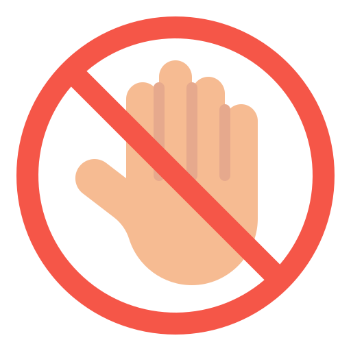

Avoid going out without going to school or going
to work (등교나 출근을 하지 않고 외출 자제하기)
Take enough rest at home while observing 3-4
days (3~4일 경과를 관찰하며 집에서 충분히 휴식 취하기)
High fever persists or symptoms become severe(고열이
지속되거나 증상이 심해질 경우)--Call center (1339, area code +120), first visit to the competent health center and
screening clinic and receive medical treatment (콜센터(1339,지역번호+120),관할보건소 및 선별진료소 우선 방문 후 진료받기)
Wear a mask and use your own car when
visiting a medical institution (의료기관 방문 시 마스크 착용 및 자차 이용하기)
Informing medical staff of overseas medical
experience and contact with respiratory symptoms (진료 의료진에게 해외경력 및 호흡기 증상자와의 접촉여부 알리기)
In Korea's Corona19 unsafe area(국내 코로나19
위험지역에서)--Refrain from going out or visiting other areas, and quarantine personnel should strictly follow the
directions of medical personnel and quarantine authorities.( 외출,타지역 방문을 자제하고 격리자는 의료인,방역당국의 지시 철저히 따르기.)
유증상자 예방수칙(Precautions for people with symptoms)